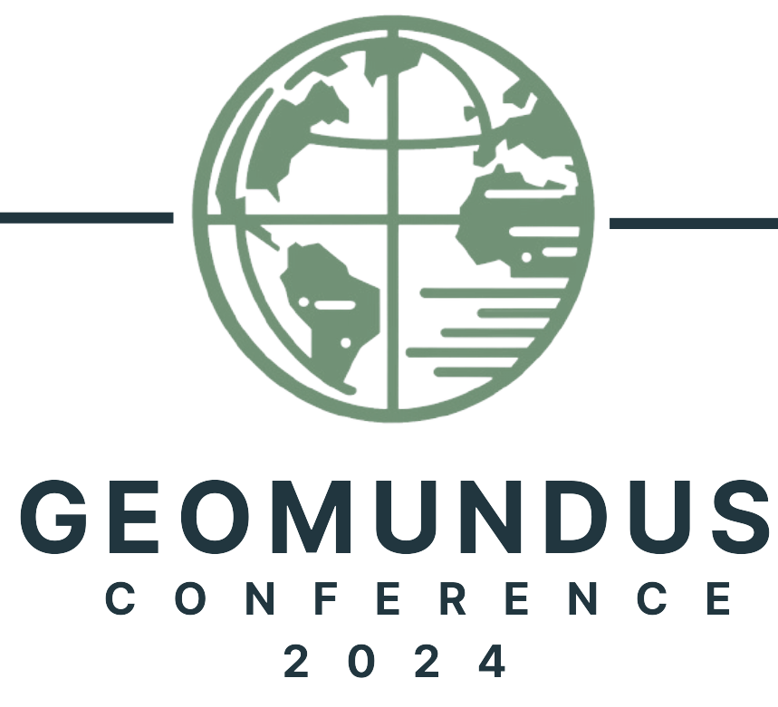

<!--
    An HTML element to define the navigation bar of a page.
    A navigation bar contains the tabs with the links to the many pages of the website.
    @author Rebeca
-->
<nav>
  <ul class="menu">
    <a href="index.html#header"
      ></a>
    <li class="item has-dropdown">
      <a>Program</a>
      <ul class="main-menu-dropdown">
        <li><a href="program.html">Schedule</a></li>
        <li><a href="speakers.html#keynotes">Keynote Speakers</a></li>
        <li><a href="speakers.html#workshops">Workshop Leaders</a></li>
      </ul>
    </li>
    <li class="item"><a href="registration.html">Registration</a></li>
    <li class="item has-dropdown">
      <a>Submissions</a>
      <ul class="main-menu-dropdown">
        <li><a href="submission.html#papers">Paper and Poster</a></li>
        <li><a href="submission.html#ConProc">Conference Proceeding</a></li>
        <li style="display: none"><a href="mapathon.html">Mapathon</a></li>
      </ul>
    </li>
    <li class="item"><a href="index.html#sponsors">Sponsors</a></li>
    <li class="item"><a href="teams.html">Team</a></li>
    <li class="item"><a href="index.html#contact">Contact</a></li>
    <li class="item"><a href="faq.html">FAQ</a></li>
    <li class="item has-dropdown">
      <a>Previous Editions</a>
      <ul class="main-menu-dropdown">
        <li><a href="https://geomundus.org/2023/">2023 Castelló</a></li>
        <li><a href="https://geomundus.org/2022/">2022 Lisboa</a></li>
        <li><a href="https://geomundus.org/2021/">2021 Lisboa</a></li>
        <li><a href="https://geomundus.org/2020/">2020 Münster</a></li>
        <li><a href="https://geomundus.org/2019/">2019 Castelló</a></li>
        <li><a href="https://geomundus.org/2018/">2018 Lisboa</a></li>
        <li><a href="https://geomundus.org/2017/">2017 Münster</a></li>
        <li><a href="https://geomundus.org/2016/">2016 Castelló</a></li>
        <li><a href="https://geomundus.org/2015/">2015 Lisboa</a></li>
        <li><a href="https://geomundus.org/2014/">2014 Münster</a></li>
        <li><a href="https://geomundus.org/2013/">2013 Castelló</a></li>
        <li>
          <a href="https://geomundus.org/2012/index-2.html">2012 Lisboa</a>
        </li>
        <li>
          <a href="https://geomundus.org/2011/index2011.php">2011 Münster</a>
        </li>
        <li><a href="https://geomundus.wordpress.com/">2010 Castelló</a></li>
        <li>
          <a
            href="https://geomundus.wordpress.com/previous-editions/geomundus-2009/"
            >2009 Lisboa</a
          >
        </li>
      </ul>
    </li>
    <li class="toggle">
      <a href="#"><i class="fas fa-bars"></i></a>
    </li>
  </ul>
</nav>
